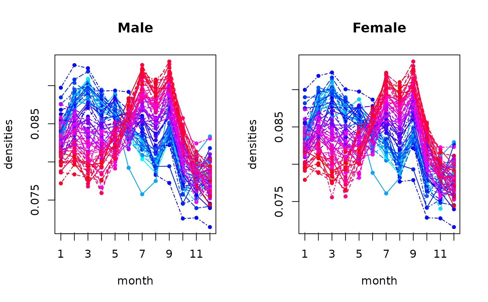
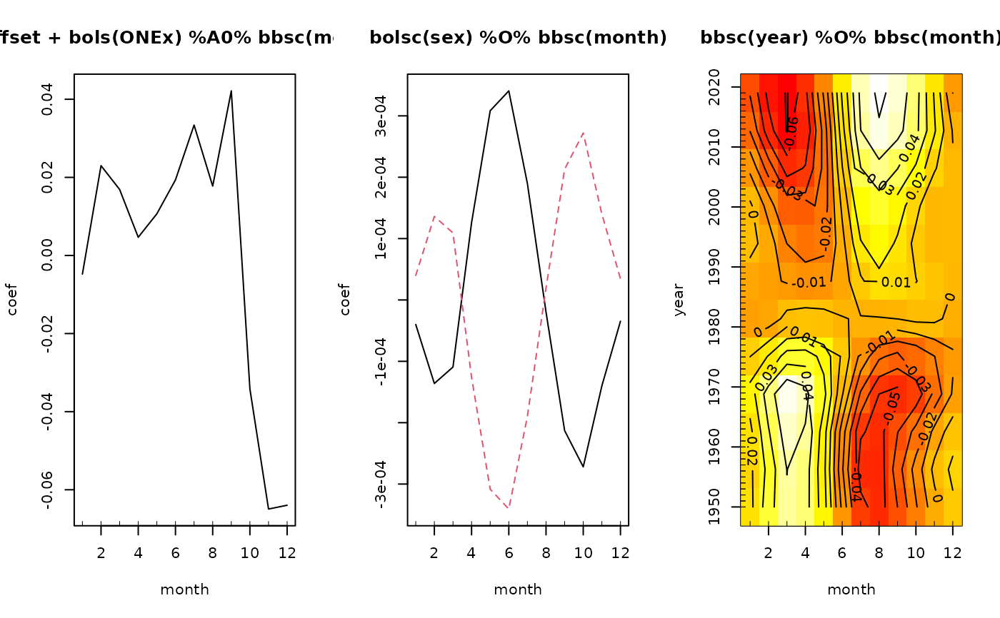
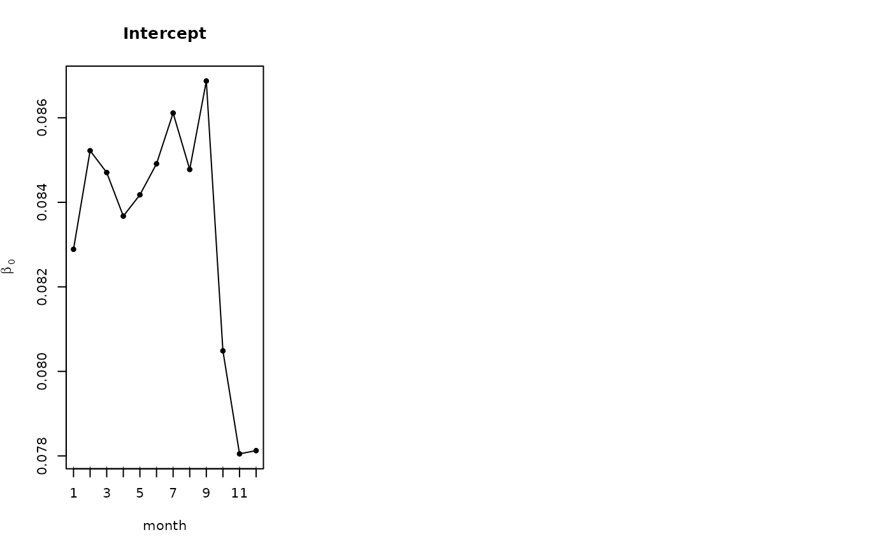
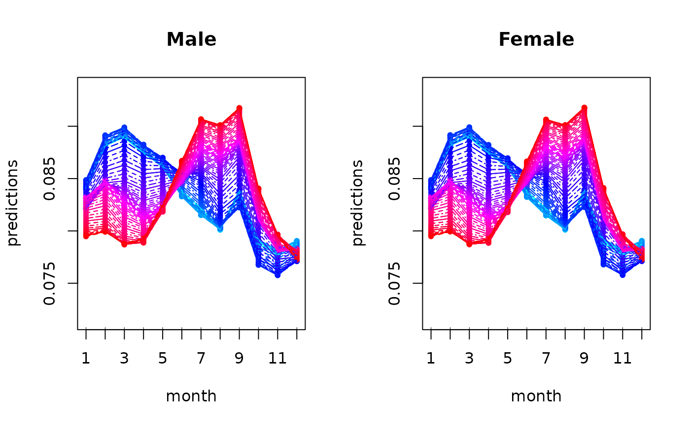

birthDistribution contains densities of live births in Germany over the
months per year (1950 to 2019) and sex (male and female), resulting in 140
densities.
Usage
data(birthDistribution, package = "FDboost")Format
A list in the correct format to be passed to FDboost for
density-on-scalar regression:
birth_densitiesA 140 x 12 matrix containing the birth densities in its rows. The first 70 rows correspond to male newborns, the second 70 rows to female ones. Within both of these, the years are ordered increasingly (1950-2019), see also
sexandyear.birth_densities_clrA 140 x 12 matrix containing the clr transformed densities in its rows. Same structure as
birth_densities.sexA factor vector of length 140 with levels
"m"(male) and"f"(female), corresponding to the sex of the newborns for the rows ofbirth_densitiesandbirth_densities_clr. The first 70 elements are"m", the second 70"f".yearA vector of length 140 containing the integers from 1950 to 2019 two times (
c(1950:2019, 1950:2019)), corresponding to the years for the rows ofbirth_densitiesandbirth_densities_clr.monthA vector containing the integers from 1 to 12, corresponding to the months for the columns of
birth_densitiesandbirth_densities_clr(domain \(\mathcal{T}\) of the (clr-)densities).
Note that for estimating a density-on-scalar model with FDboost, the
clr transformed densities (birth_densities_clr) serve as response, see
also the vignette "FDboost_density-on-scalar_births".
The original densities (birth_densities) are not needed for estimation,
but still included for the sake of completeness.
Source
Statistisches Bundesamt (Destatis), Genesis-Online, data set 12612-0002 (01/18/2021); dl-de/by-2-0; processed by Eva-Maria Maier
Details
To compensate for the different lengths of the months, the average number of births per day for each month (by sex and year) was used to compute the birth shares from the absolute birth counts. The 12 shares corresponding to one year and sex form one density in the Bayes Hilbert space \(B^2(\delta) = B^2\left( \mathcal{T}, \mathcal{A}, \delta\right)\), where \(\mathcal{T} = \{1, \ldots, 12\}\) corresponds to the set of the 12 months, \(\mathcal{A} := \mathcal{P}(\mathcal{T})\) corresponds to the power set of \(\mathcal{T}\), and the reference measure \(\delta := \sum_{t = 1}^{12} \delta_t\) corresponds to the sum of dirac measures at \(t \in \mathcal{T}\).
References
Maier, E.-M., Stoecker, A., Fitzenberger, B., Greven, S. (2021): Additive Density-on-Scalar Regression in Bayes Hilbert Spaces with an Application to Gender Economics. arXiv preprint arXiv:2110.11771.
See also
clr for the (inverse) clr transformation.
Examples
data("birthDistribution", package = "FDboost")
# Plot densities
year_col <- rainbow(70, start = 0.5, end = 1)
year_lty <- c(1, 2, 4, 5)
oldpar <- par(mfrow = c(1, 2))
funplot(1:12, birthDistribution$birth_densities[1:70, ], ylab = "densities", xlab = "month",
xaxp = c(1, 12, 11), pch = 20, col = year_col, lty = year_lty, main = "Male")
funplot(1:12, birthDistribution$birth_densities[71:140, ], ylab = "densities", xlab = "month",
xaxp = c(1, 12, 11), pch = 20, col = year_col, lty = year_lty, main = "Female")

par(mfrow = c(1, 1))
# fit density-on-scalar model with effects for sex and year
model <- FDboost(birth_densities_clr ~ 1 + bolsc(sex, df = 1) +
bbsc(year, df = 1, differences = 1),
# use bbsc() in timeformula to ensure integrate-to-zero constraint
timeformula = ~bbsc(month, df = 4,
# December is followed by January of subsequent year
cyclic = TRUE,
# knots = {1, ..., 12} with additional boundary knot
# 0 (coinciding with 12) due to cyclic = TRUE
knots = 1:11, boundary.knots = c(0, 12),
# degree = 1 with these knots yields identity matrix
# as design matrix
degree = 1),
data = birthDistribution, offset = 0,
control = boost_control(mstop = 1000))
# Plotting 'model' yields the clr-transformed effects
par(mfrow = c(1, 3))
plot(model, n1 = 12, n2 = 12)

# Use inverse clr transformation to get effects in Bayes Hilbert space, e.g. for intercept
intercept_clr <- predict(model, which = 1)[1, ]
intercept <- clr(intercept_clr, w = 1, inverse = TRUE)
funplot(1:12, intercept, xlab = "month", xaxp = c(1, 12, 11), pch = 20,
main = "Intercept", ylab = expression(hat(beta)[0]), id = rep(1, 12))
# Same with predictions
predictions_clr <- predict(model)
predictions <- t(apply(predictions_clr, 1, clr, inverse = TRUE))
pred_ylim <- range(birthDistribution$birth_densities)
par(mfrow = c(1, 2))

funplot(1:12, predictions[1:70, ], ylab = "predictions", xlab = "month", ylim = pred_ylim,
xaxp = c(1, 12, 11), pch = 20, col = year_col, lty = year_lty, main = "Male")
funplot(1:12, predictions[71:140, ], ylab = "predictions", xlab = "month", ylim = pred_ylim,
xaxp = c(1, 12, 11), pch = 20, col = year_col, lty = year_lty, main = "Female")

par(oldpar)